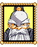

|
신부
바리오스님에 대해 걱정하신가봅니다. 성으로 한번 가시지 그러지요? 분명 바리오스님을 도와드릴수 있는 기회가 있을지도 모릅니다. |
 |
여자
요즘 조수님께서 까먹는일이 너무 많단말야. 나이는 못속인다니까. 할수없지. |
|
조수
자네 기억을 못찾았다고 걱정할 필요가 없다네. 그런것은 우리 모두 한때 겪는일이라네. 기쁜일들이든, 슬픈일들이든...나이가 들면 모두 잊어버리게 된다네. |
|
경비병
나도 바리오스님께 검술을 배우고싶어!...뭐, 배우고는 싶지만, 교회를 지켜야하기때문에 시간이 없다구. 맥스 정말 네가 부러워! |
|
여자
가디아나성은 바로 앞에 있단다. 규모는 작지만 역사가 깊은곳이지. 그리고 사람들이 말하길 아주 굉장한 보물이 성안에 있다고 하더군. 무슨 보석이라도 있는걸까? |
|
할아버지
마나리나로 가고싶구나. 그래. 그것에 거서, 에 뭐랄까, 공부를 하고싶구나... 그래가지고 훌륭한 마법사가 되는것이지! 불가능한것만은 아니지. 공주님처럼 이루는것이야. |
|
겁쟁이 남자
아아아아악! 안돼! 안돼! 아무것도 안봤다고! 진짜야! 살려줘...... 어?! 난 또 네가 고블린인줄 알았어. 관문으로 가는 도로에서 몇마리를 봤다고. 그런녀석들이 바깥에 있는한 마을은 절대 떠나지 않을거야! |
|
술집주인
실례합니다! 젊은이! 저 늙은이는 꽤 고생이라우. 저 늙은이일에 끼어들지 않는게 좋습니다. 한풀이를 들을 필요없다네. 저양반때문에 손님들이 다 불편해한다오. 허구헌날 한숨만 쉬지. 정말 지겹다니까. |
|  |
골트
어이 젊은이. 이야기 하나 듣고싶은가? |
|
(아니오)
알겠네. 나역시 자네나이였을땐 할일이 참 많았었지. 아마 다음에 이야기하지. |
|
(예)
고맙네. 자네가 맥스지? 검을 꽤 쓴다고 들었네. 그렇기때문에 성에 있는 기사들이 자네들을 시기하곤하지... 핫! 녀석들때문에 얹짢아할 필요가 없다네. 그녀석들에게 중요한것은 자신들의 출진뿐이니까. |
|
(아니오)
알겠네. 나역시 자네나이땐 할일이 참 많았었지. 아마 다음에 이야기하지. |
|
수레주인
어이. 이 주위에 내 수레를 보지 못했나? 브레이크가 안달렸거든. 조금만 밀면 날아갈정도로 굴러다니지! |
|
상점주인
어서오세요! 어서오세요! 찾는게 무엇인가? 아냐, 말하지말게. 우리는 여태까지 평화로웠잖은가? 그러니 아무도 무기같은걸 산다던가 물건같은걸 무역하러 오지 않는단 말씀이야.
...휴, 가게를 열기가 정말 귀찮구만!
그렇지만 내가 투덜투덜대봤자 자네에겐 도움이 하나도 되지 않겠지. 그러니 조언하나 해주겠네...만약 장착할수 있는 무기를 구입한다면 장착칸으로 옮겨야한다는것을 잊지말게나. 그렇지 않으면 아무런 효과가 없다고. 완전 낭비지! |
|
상점조수
사장님께서는 더이상 가게를 꾸릴 의지가 없으셔. 도구를 구하고 싶다면 그쪽은 내가 대신 도와줄수가 있어. |
|
병사1
맥스님! 이렇게 뵙게 되어 영광입니다! 어째서 맥스님같은분이 기사가 못되는지 이해가 안갈 따름입니다. 세상이 미쳤나봅니다! 기사들 모두 맥스님의 검술실력에 시샘을 하고 있습니다! |
|
병사2
성에서의 명령이야! 네가 누구라고 상관없어. 밖에 나가게 할순없어! |
|
병사3
아, 미안. 솔직히 말하면 나도 이런짓은 하고싶지 않다고, 하지만... |
|
여관주인
정말 이상하다니까. 최근에 손님들이 단한사람도 없었다니까. 얼마전까지만 해도 이 여관은 꽤 붐볐지만 지금은 여행자는 코빼기도 안보인다고! |
|
(여관 포스터)
가디아나 여관
따뜻하고 친절한 분위기입니다. |
|
엄마
딸아이가 최근에 이상한것같아. 과연 무슨일일까? |
|
소녀
으앙 으앙...난 아주 무서운 꿈을 꾸었어. 마을들과 사람들이 불에 타는거였어... 집들도, 사람들도, 모든것들이. 너무 무서웠다고! |
|
아빠
마누라는 딸아이때문에 큰 근심이지. 난 별로 걱정은 안한다고. 이미 결혼생활 자체가 너무나도 많은 걱정들로 둘러쌓여있다고! 내가 너라면 홀애비로 살겠다! |
|
열혈남
으악!! 누구야?! 누가 저 수레를 나한테 박으려고 한거야?! 얌마! 뭐하는거야? 다음에도 또 그러면 용서안한다! |
|
개
크르르... 왈! 왈! |
|
소녀
골트 할아버지는 매일마다 술집에서 노시지. 정말 지겨워. |
|
엄마
아버님께서는 한때 이땅에서 제일가는 병사였지. 지금은 그냥 어영부영하실뿐이라고. |
|
책장1
"검사의길"
"용사의마음"
"전쟁병법"
맥스가 바리오스에게 받은 많은 책들이 있다. |
|
책장2
많은 책들이 있다 :
"빛과 어둠의 전설"
"신들의시대" |
|
책장3
"많은 종류의 책들이 있다 :
"자식들을 키우는 방법"
"알뜰히 사는법" |
|
책장4
아주 많은 책들이 있다 :
"전사의 규율"
"무기사전"
"가디아나전사들의 회고록 |
[가디아나성]
|
|
경비병1
전투준비중인 전사들은 이곳 본진에서 준비를 한다. 출입하려면 허락을 받아야한다. |
|
병사1
가디아나성에 온것을 환영한다! |
|
푯말
<- 본진 이쪽으로 |
|
장관
나는 폐하께서 갓난아기실때부터 폐하를 모셨다... 그렇지만 아무것도 내게 알려주지 않지. 섭섭하다네. 소문에 의하면 뭔가에 의해 근심을 한다네만. 무엇인지 아는가? |
|
(아니오)
그럴줄 알았네...아무래도 고대의관문-아, 아무것도 아니네. 더이상 신경쓰지 말라고. |
|
(예)
흠! 요즘 자네같은 젊은이들은 모든것을 다 안다고 생각하지! |
 |
매이
......
말걸지마...
바쁘다고. |
|
매이
...... |
|
경비병2
보물을 지키는것은 너무 싫다고. 너무 긴장감이 흐른단말이야... 다른이와 교대하고싶어... 응? 무슨 보물이냐고? 오직 워드장관님께서 아시는것이다. |
|
경비병3
그만두라고. 그냥 밀어버린다고 네가 이곳을 통과할순없다고! 꺼져!
일년전에 워드장관께서 이곳의 수비를 강화시키라고 명령하셨다. 분명 무슨 보물을 발견하셔서 보호하려고 하시는것같아. |
|
병사
이곳은 기사들의 훈련장이다. 너무 가까이 접근해오지 말라고... 여기에 있는 녀석들은 널 별로 좋아하지 않는다고. 물론 우리들이야 네 편이지... |
|
기사1
이얏! 받아라! 방랑상인에게서 들은 소문이다. 룬파우스트군이 공격준비를 하고 있다고 말했어. 하지만 그것은 소문일뿐이라고... |
|
기사2
어?! 뭐냐? 너같은 놈들은 우리들같은 사람들과 말을 걸 자격이 없다! 꺼져! 당장! |
|
기사3
이얏! 받아라! 이것도 받아라! 그리고 이것도 받아라! 휴! 훈련은 진짜 힘들다니까. |
|
기사4
하아앗! 우아앗! 기합을 뭘로 할지 정하는중이라고... |
|
기사5
지금같은때엔 전쟁이 뜸한편이지. 우리같은 기사들이 더이상 필요가 있는지 모르겠어...? |
|
기사6
몇몇 기사들은 꽤 무례하다는것은 알아. 내가 대신 사과하마... 기사도의 명예라는것 때문에 기사들이 가끔 제정신을 못차리는 경우가 있지...전투에 대해 걱정하기 때문이야. |
|
기사7
어이! 여기서 뭐하는거냐? 이곳은 가디아나성이다. 이곳에서 서성거리지 말라고. |
|
할아버지
이 탑위에서의 경치는 대단하지! 몇리앞을 볼수있다. 응? 탑의 지하말이냐? 흠, 지하층에 무엇을 하는곳인지 나도 잘 모른다. |
|
법사
이방에 관심이 있나? 감추지 말라고. 다른사람들도 마찬가지니까. 사실은 나도 이곳이 뭘하는곳인지 몰라. 내가 오직 아는곳은 이곳에 있는것은 '기계'라고 불린다는것이다. 분명 마나리나에 있는 마법사들이 더 자세히 알고 있을것이다... |
|
전망대에 있는 할아버지
음, 이게 뭘까? 오 맙소사! |
|
(망원경)
(맥스는 망원경안으로 들여다보았다.) |
|
할아버지
어...엄청나게 큰 눈알이다!...응? |
|
할아버지
아, 자네로구만! 미안하다네. 이 망원경에 한눈이 팔려서 자네가 오는지도 몰랐다네! 이것이 바로 나의 가장 훌륭한 발명품이라고. 아주 멀리 있는것도 볼수있지! 아 그런데 맥스, 사람들이 고대의관문주위에 모여들고 있더구나. 무슨일을 하려는거지? |